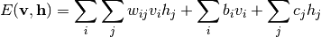
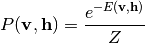
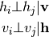
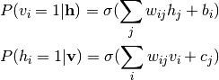
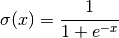
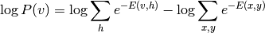

神经网络模型（无监督）(Neural network models (unsupervised))¶
受限波尔兹曼机 (Restricted Boltzmann machines)¶
受限波尔兹曼机 (Restricted Boltzmann machines, RBM) 是基于概率模型的无监督非线性特征学习器。当将由一个RBM或者RBM的层次结构所提取的特征传递给一个线性分类器（例如，线性SVM或一个感知器）时，往往能给出很好的结果。
RBM模型对输入值的概率分布做出假定。目前，scikit-learn仅提供 BernoulliRBM ，它假定输入值只能是二元值或者介于0和1之间的值，来编码特征被激活的概率。
RBM使用一个特性的图模型来使数据的似然度最大化。其使用的参数学习算法（ Stochastic Maximum Likelihood ）能防止代表值与输入值发生过多的偏移，从而使代表值获得一定的正则性。但是，这也使得模型对于较小的数据集效果变差，通常来说，不能用于概率密度估计。
这种方法被广泛地用于基于独立RBM权重的深度神经网络的初始化。这种方法也被称作无监督预训练。

Examples:
- sphx_glr_auto_examples_neural_networks_plot_rbm_logistic_classification.py
图模型和参数化¶
一个RBM的图模型是一个全连接的双向的图形。

节点是随机变量，它们的状态取决于和它们连接的其他节点的状态。所以模型被参数化为各连接的权重，以及每一个可见或隐藏单元的一个截矩项（或称为偏移项）。
能量方程用来量度一个连接设置的质量好坏。

上式中，  and
and  分别为可见层和隐藏层的截矩向量。模型的联合概率用能量来定义：
分别为可见层和隐藏层的截矩向量。模型的联合概率用能量来定义：

受限波尔兹曼机中的 受限 指的是模型的双向结构，它在隐藏单元或者可见单元之间有直接的连接互动。这就意味着假定以下条件独立性：

这种双向结构能允许使用高效的块吉布斯抽样 (block Gibbs sampling)来进行统计推断。
伯努利受限玻尔兹曼机¶
在 BernoulliRBM 中，所有单元都是二元随机单元。这意味着输入数据必须为二元值或者介于0和1之间的实数值。这个0和1之间的实数值代表可见单元被激活的概率。这对于特征识别是一个较好的模型，因为特征识别中我们对像素点是否激活感兴趣。但这个模型不适用于自然场景中的图像，因为背景会导致邻近像素点的深度和倾向会取相同的值。
每一个单元的条件概率分布由它所接受到的输入的逻辑S形激活函数给出：

其中，  是逻辑S形激活函数：
是逻辑S形激活函数：

随机最大似然学习¶
在 BernoulliRBM 中执行的训练算法为随机最大似然 (Stochastic Maximum Likelihood, SML) 或者持续对比散度 (Persistent Contrastive Divergence, PCD)。直接最优化最大似然并不可行，因为数据似然的表达式为：

为了简化，上式中仅包含一个训练样本。对样本的梯度由上式中的两项组成。它们由于各自的符号，通常也被称为正梯度项和负梯度项。在具体执行中，梯度用小批量样本进行估计。
在最大化log底数似然过程中，正梯度项使模型更偏向于和观测训练数据兼容的隐藏状态。由于RBM的双向结构，正梯度项的计算很高效。但是负梯度项的计算并不容易。其目的是降低模型偏好的联合状态的能量，以此来使模型对数据保真。它可以用块吉布斯抽样算法的马尔科夫链来近似，即  和
和  在对方条件下迭代抽样，直至马尔科夫链混合。通过这种方式产生的样本有时也被称为虚空粒子。这种方式效率非常低，而且很难判断马尔科夫链是否已经混合。
在对方条件下迭代抽样，直至马尔科夫链混合。通过这种方式产生的样本有时也被称为虚空粒子。这种方式效率非常低，而且很难判断马尔科夫链是否已经混合。
对比散度方法建议在较少次的  次迭代后就停止马尔科夫链，有时迭代甚至仅为一次。这种方法快速且方差较低，但是样本对模型分布的偏移很大。
次迭代后就停止马尔科夫链，有时迭代甚至仅为一次。这种方法快速且方差较低，但是样本对模型分布的偏移很大。
持续对比散度用来针对这个问题。不同于每次在需要梯度的时候开始一个新的马尔科夫链，并且仅进行一次吉布斯抽样，在PCD中我们保留一定的马尔科夫链 （虚空粒子），它们在每次权重更新后进行 步吉布斯抽样。这允许粒子更彻底地探索整个空间。
参考文献：
- “A fast learning algorithm for deep belief nets” G. Hinton, S. Osindero, Y.-W. Teh, 2006
- “Training Restricted Boltzmann Machines using Approximations to the Likelihood Gradient” T. Tieleman, 2008